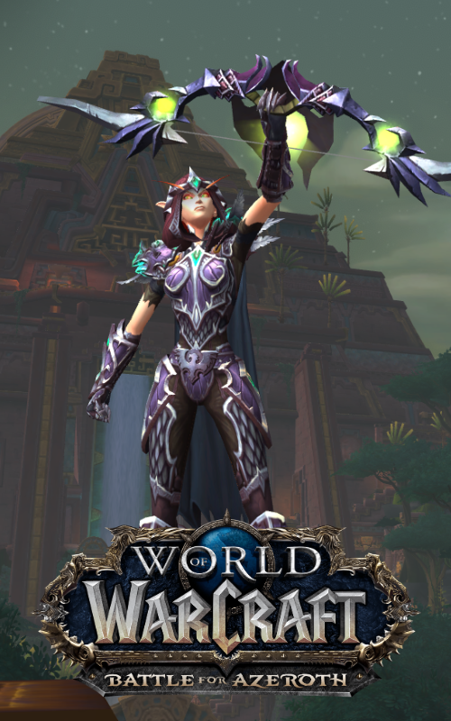
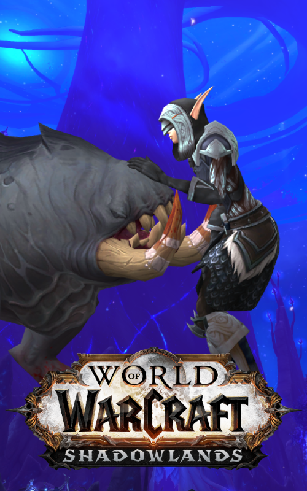
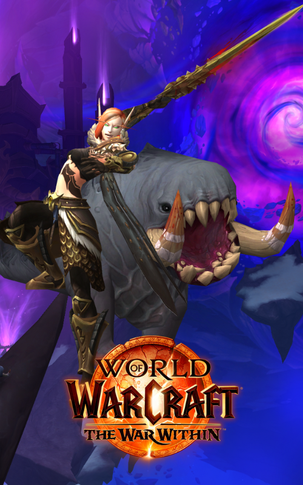

The Origins of the Unlikely Duo
Nervuras journey began way before she met Blurrg for the first time, originally she was created 2014 on a little private "The Burning Crusade" server.
But to be honest, without me... Blurrg! She would have never made it so far!

Battle for Azeroth
Back then, Nervura was a sharp-edged, slightly evil Marksman Hunter — cold, precise, and always hunting alone.
But everything changed the day she met Blurrg. The little Bloodbeast stole her snacks, her patience… and finally, her heart.
From that day on, she put down her bow and picked up something far greater — a spear, chaos, and friendship.

Shadowlands
When the veil between life and death shattered, Nervura and Blurrg charged straight into the afterlife — together, as always.
Their bond had grown unbreakable; she swore an oath to protect all Crawgs, no matter the realm.
Not even Death itself could outsmart Blurrg — the real brain of the operation, of course.

The War Within
After years apart from adventure, Nervura and Blurrg returned — stronger, wiser, and slightly more afraid of spiders. 🕷️
Together, they braved the depths, conquered their fears (with only minor screaming), and now stand united against the world-eating Voidblob Dimensius.
No matter how dark the tunnels get, Blurrg’s croak still echoes — fearless, loyal, and maybe just a little hungry.